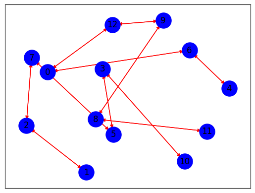

import nltk
from nltk.corpus import stopwords
from nltk.tokenize import word_tokenize
import re
# Library untuk data manipulation
import pandas as pd
import networkx as nx
import matplotlib.pyplot as plt
from tqdm import tqdm
# Library untuk text similarity
from sklearn.metrics.pairwise import cosine_similarity
data = pd.read_csv('hasil_crowling.csv')
data
| Judul | Tanggal | Ringkasan | Kategori | |
|---|---|---|---|---|
| 0 | Natalius Pigai Satu-satunya Calon Menteri Prab... | 17 Okt 2024 02:12 | Mantan Komisioner Komnas HAM Natalius Pigai tu... | Politik |
| 1 | Ungkap Arahan Prabowo Saat Pembekalan Calon Me... | 17 Okt 2024 01:10 | Sebanyak 59 tokoh hadir mengikuti kegiatan pem... | Peristiwa |
| 2 | Begini Cara Dorong Petani Lokal untuk Capai Pa... | 16 Okt 2024 23:21 | Berikut ini adalah beberapa cara yang dapat me... | News |
| 3 | Presiden Jokowi dan Prabowo Subianto Disebut K... | 16 Okt 2024 20:55 | Jelang pensiunnya Presiden Joko Widodo atau Jo... | Politik |
| 4 | Pembekalan Calon Menteri Prabowo Kelar, Rombon... | 16 Okt 2024 20:10 | Mereka mengantre keluar kediaman lantaran bera... | Politik |
| 5 | Produksi Pangan Turun, Jokowi Ungkap Hasil Pan... | 16 Okt 2024 20:05 | Presiden Joko Widodo atau Jokowi mengatakan pr... | Peristiwa |
| 6 | Pesan Prabowo di Pembekalan Calon Menteri: APB... | 16 Okt 2024 19:31 | Menteri Hukum dan Hak Asasi Manusia (Menkumham... | Peristiwa |
| 7 | Kurangi Sampah ke TPA Sarimukti, Pemkab Bandun... | 16 Okt 2024 19:27 | Pjs. Bupati Bandung menindaklanjuti kebijakan ... | News |
| 8 | Polisi Bakal Selidiki Kebenaran Pertemuan Alex... | 16 Okt 2024 19:03 | Ade Safri Simanjuntak, menyatakan pihaknya aka... | Peristiwa |
| 9 | 6 Fakta Terkait Pramono Anung Sambangi Kediama... | 16 Okt 2024 18:30 | Pramono Anung yang merupakan mantan Sekretaris... | Peristiwa |
| 10 | Viral Sopir Truk Nekat Lawan Arah di Jakut, Po... | 16 Okt 2024 18:04 | Dalam rekaman yang diunggah terlihat sopir tru... | Peristiwa |
| 11 | Polisi Pastikan 2 Tersangka Pencabulan di Pant... | 16 Okt 2024 18:02 | Kabid Humas Polda Metro Jaya, Kombes Pol Ade A... | Peristiwa |
| 12 | DKP Penajam Paser Utara Gelar Gerakan Pangan M... | NaN | Tujuan GPM adalah membantu masyarakat untuk me... | NaN |
| 13 | Jokowi Akan Naik Pesawat Komersial dari Halim ... | 16 Okt 2024 17:45 | Budi Arie Setiadi mengatakan Jokowi akan beran... | Peristiwa |
| 14 | Hakim Agung Sunarto Terpilih sebagai Ketua Mah... | 16 Okt 2024 17:14 | Wakil Ketua Mahkamah Agung Bidang Yudisial, Su... | Peristiwa |
| 15 | Polisi Minta Hasil Tes Pemeriksaan Kejiwaan An... | 16 Okt 2024 17:00 | Polisi hingga hari ini masih mendalami dugaan ... | Peristiwa |
| 16 | Mantan Bupati Tangerang yang Juga Ayah Kandung... | 16 Okt 2024 16:39 | Semasa hidupnya, Ismet Iskandar juga dikenal s... | Peristiwa |
| 17 | Potret Cagub Pramono Anung dan Slank Kompak Ta... | 16 Okt 2024 16:35 | Penanaman mangrove ini merupakan wujud dari pr... | News |
| 18 | Pesan Khusus Prabowo Subianto untuk Herindra y... | 16 Okt 2024 16:31 | Calon Kepala Badan Intelijen Negara (BIN) Muha... | Peristiwa |
| 19 | Sejumlah Tokoh dan Pakar Siap Sukseskan Pelant... | 16 Okt 2024 16:05 | Mulusnya transisi pemerintahan dapat menjaga s... | Politik |
| 20 | Kasus Emas Antam, Saksi Sebut Budi Said Lakuka... | 16 Okt 2024 16:01 | Mantan Manajer Retail PT Antam, Nuning Septi W... | Peristiwa |
| 21 | 5 Fakta Terkait Budi Gunawan Diberhentikan dar... | 16 Okt 2024 16:00 | Dewan Perwakilan Rakyat (DPR) RI telah menerim... | Peristiwa |
| 22 | Pramono: Semua Ketum Parpol Teman Saya, Nanti ... | 16 Okt 2024 15:51 | Calon Gubernur Jakarta, Pramono Anung mengaku ... | News |
| 23 | DPR Minta Herindra Bisa Netral saat Sudah Resm... | 16 Okt 2024 15:41 | Kepada Herindra, Puan menitipkan pesan khusus ... | Peristiwa |
| 24 | Pengamat Nilai Jika SK-ADT Pimpin Sulut, Dukun... | 16 Okt 2024 15:25 | Pengamat politik dan pemerintahan Sulawesi Uta... | Politik |
| 25 | Cegah Banjir Terulang, Pramono Bakal Bebaskan ... | 16 Okt 2024 15:22 | Untuk mengatasi banjir di daerah bantaran kali... | News |
| 26 | P3PD Pangkas Waktu Pelatihan Aparatur Desa hin... | 16 Okt 2024 15:13 | Ia berharap, mereka terus belajar mengasah pen... | Peristiwa |
| 27 | Puan Maharani Masih Irit Bicara soal Pertemuan... | 16 Okt 2024 15:03 | Ketua DPP PDI Perjuangan, Puan Maharani belum ... | Politik |
| 28 | Selama 3 Hari, 768 Pengendara Terjaring Operas... | 16 Okt 2024 15:02 | Ade Ary merincikan, 518 pelanggar dari 768 pel... | Peristiwa |
| 29 | Pemberantasan Korupsi Jadi Tantangan Pemerinta... | 16 Okt 2024 15:01 | Prabowo-Gibran dihadapkan pada tugas berat unt... | Peristiwa |
| 30 | Transaksi Digital Dinilai Mampu Tingkatkan Ink... | 16 Okt 2024 14:58 | Erwin melihat perkembangan transaksi digital t... | Peristiwa |
| 31 | Puan: DPR Terima Herindra Jadi Calon Kepala BI... | 16 Okt 2024 14:49 | Puan mejelaskan, usai Herindra dinyatakan laya... | Peristiwa |
| 32 | Polisi Akan Panggil Olla Ramlan sebagai Saksi ... | 16 Okt 2024 14:44 | Polisi akan memanggil artis Olla Ramlan sebaga... | Peristiwa |
| 33 | Hari Parlemen Indonesia, Novita Hardini Soroti... | 16 Okt 2024 14:31 | Novita menegaskan bahwa kehadiran perempuan di... | Politik |
| 34 | Tak Senang Ada Penebangan Pohon, Seorang Pria ... | 16 Okt 2024 14:30 | Seorang warga diduga mengacungkan senjata api ... | Megapolitan |
| 35 | Polisi Selidiki Laporan Olla Ramlan soal Pence... | 16 Okt 2024 14:11 | Polisi menerangkan, akun TikTok dan Instagram ... | Peristiwa |
| 36 | Pesantren Didorong Jadi Lembaga Pendidikan Ung... | 16 Okt 2024 14:04 | Di masa depan, pesantren diharapkan menjadi le... | Peristiwa |
| 37 | 7 Fakta Terkini Terkait Kasus Pelecehan Seksua... | 16 Okt 2024 14:00 | Polres Metro Tangerang mengungkap kronologi te... | Peristiwa |
| 38 | Jokowi Resmikan Dua Ruas Tol Trans Sumatera Se... | 16 Okt 2024 13:45 | Presiden Joko Widodo atau Jokowi meresmikan du... | Peristiwa |
| 39 | Pembekalan Calon Menteri, Prabowo Subianto Und... | 16 Okt 2024 13:40 | Presiden terpilih Prabowo Subianto mengundang ... | Politik |
| 40 | Permintaan Prabowo ke Todotua Pasaribu: Ciptak... | 16 Okt 2024 13:31 | Todotua mengungkapkan bahwa pertemuan tersebut... | Peristiwa |
| 41 | Jokowi Belum Beli Tiket Pesawat ke Solo untuk ... | 16 Okt 2024 13:16 | Presiden Joko Widodo (Jokowi) mengaku belum ta... | Peristiwa |
| 42 | Program Asta Cita Prabowo-Gibran Diharap Bisa ... | 16 Okt 2024 13:00 | PB HMI berharap Prabowo dan Gibran tidak hanya... | Peristiwa |
| 43 | Kalah Lawan China, Jokowi Optimistis Timnas In... | 16 Okt 2024 12:55 | Jokowi menanggapi santai soal kekalahan Indone... | Peristiwa |
| 44 | Pemprov Kalsel Dorong Perangkat Kehumasan Meng... | 16 Okt 2024 12:45 | Pemprov Kalimantan Selatan, melalui Diskominfo... | News |
| 45 | Herindra Bakal Dilantik Sebagai Kepala BIN Bar... | 16 Okt 2024 12:24 | Sebelum tes dimulai pukul 11.00 WIB, Herindra ... | Peristiwa |
| 46 | Geopolitik hingga Antikorupsi Jadi Materi Pemb... | 16 Okt 2024 12:10 | Juru Bicara Prabowo, Dahnil Anzar Simanjuntak,... | Politik |
| 47 | Lapas Narkotika Gunung Sindur Didukung Raih Pr... | 16 Okt 2024 12:00 | Pada tahun 2024 Lapas Narkotika Gunung sindur ... | Peristiwa |
| 48 | Pemberhentian Budi Gunawan Jadi Kepala BIN, Jo... | 16 Okt 2024 11:49 | Jokowi mengatakan Kepala BIN baru pengganti Bu... | Politik |
| 49 | Ketua DPR: Fit and Proper Test Calon Kepala BI... | 16 Okt 2024 11:43 | Dewan Perwakilan Rakyat (DPR) menggelar fit an... | Peristiwa |
| 50 | Bertemu Konsul Jenderal Australia, Pj Gubernur... | 16 Okt 2024 11:27 | Pj Gubernur Jawa Tengah, Nana Sudjana menerima... | News |
| 51 | 10 Tahun Kerja Bersama: LPDP dan Peran Pendidi... | 16 Okt 2024 11:12 | Selama lebih dari satu dekade, LPDP telah mema... | News |
def clean_text(text):
text = re.sub(r'((www\.[^\s]+)|(https?://[^\s]+))', ' ', text) # Menghapus https* and www*
text = re.sub(r'@[^\s]+', ' ', text) # Menghapus username
text = re.sub(r'[\s]+', ' ', text) # Menghapus tambahan spasi
text = re.sub(r'#([^\s]+)', ' ', text) # Menghapus hashtags
text = re.sub(r"[^a-zA-Z : .]", "", text) # Menghapus tanda baca
text = re.sub(r'\d', ' ', text) # Menghapus angka
text = text.lower()
text = text.encode('ascii','ignore').decode('utf-8') #Menghapus ASCII dan unicode
text = re.sub(r'[^\x00-\x7f]',r'', text)
text = text.replace('\n','') #Menghapus baris baru
text = text.strip()
return text
def clean_stopword(tokens):
listStopword = set(stopwords.words('indonesian'))
filtered_words = [word for word in tokens if word.lower() not in listStopword]
return filtered_words
import nltk
from nltk.corpus import stopwords
from nltk.tokenize import word_tokenize
import re
import pandas as pd
from tqdm import tqdm
# Download stopwords jika belum diunduh
nltk.download('stopwords')
# Fungsi untuk membersihkan teks
def clean_text(text):
text = re.sub(r'((www\.[^\s]+)|(https?://[^\s]+))', ' ', text) # Menghapus https* and www*
text = re.sub(r'@[^\s]+', ' ', text) # Menghapus username
text = re.sub(r'[\s]+', ' ', text) # Menghapus tambahan spasi
text = re.sub(r'#([^\s]+)', ' ', text) # Menghapus hashtags
text = re.sub(r"[^a-zA-Z :\.]", "", text) # Menghapus tanda baca
text = re.sub(r'\d', ' ', text) # Menghapus angka
text = text.lower()
text = text.encode('ascii', 'ignore').decode('utf-8') # Menghapus ASCII dan unicode
text = re.sub(r'[^\x00-\x7f]', r'', text)
text = text.replace('\n', '') # Menghapus baris baru
text = text.strip()
return text
# Fungsi untuk membersihkan stopwords
def clean_stopword(tokens):
listStopword = set(stopwords.words('indonesian'))
filtered_words = [word for word in tokens if word.lower() not in listStopword]
return filtered_words
# Fungsi untuk memproses teks
def preprocess_text(content):
result = {}
for i, text in enumerate(tqdm(content)):
cleaned_text = clean_text(text)
tokens = word_tokenize(cleaned_text)
cleaned_stopword = clean_stopword(tokens)
result[i] = ' '.join(cleaned_stopword)
return result
# Misalnya, data adalah DataFrame yang berisi kolom 'Ringkasan'
data = pd.read_csv('hasil_crowling.csv') # Ganti dengan file yang sesuai
data['cleaned_news'] = preprocess_text(data['Ringkasan'])
print(data)
[nltk_data] Downloading package stopwords to /root/nltk_data...
[nltk_data] Package stopwords is already up-to-date!
0%| | 0/52 [00:00<?, ?it/s]
100%|██████████| 52/52 [00:00<00:00, 1302.28it/s]
Judul Tanggal \
0 Natalius Pigai Satu-satunya Calon Menteri Prab... 17 Okt 2024 02:12
1 Ungkap Arahan Prabowo Saat Pembekalan Calon Me... 17 Okt 2024 01:10
2 Begini Cara Dorong Petani Lokal untuk Capai Pa... 16 Okt 2024 23:21
3 Presiden Jokowi dan Prabowo Subianto Disebut K... 16 Okt 2024 20:55
4 Pembekalan Calon Menteri Prabowo Kelar, Rombon... 16 Okt 2024 20:10
5 Produksi Pangan Turun, Jokowi Ungkap Hasil Pan... 16 Okt 2024 20:05
6 Pesan Prabowo di Pembekalan Calon Menteri: APB... 16 Okt 2024 19:31
7 Kurangi Sampah ke TPA Sarimukti, Pemkab Bandun... 16 Okt 2024 19:27
8 Polisi Bakal Selidiki Kebenaran Pertemuan Alex... 16 Okt 2024 19:03
9 6 Fakta Terkait Pramono Anung Sambangi Kediama... 16 Okt 2024 18:30
10 Viral Sopir Truk Nekat Lawan Arah di Jakut, Po... 16 Okt 2024 18:04
11 Polisi Pastikan 2 Tersangka Pencabulan di Pant... 16 Okt 2024 18:02
12 DKP Penajam Paser Utara Gelar Gerakan Pangan M... NaN
13 Jokowi Akan Naik Pesawat Komersial dari Halim ... 16 Okt 2024 17:45
14 Hakim Agung Sunarto Terpilih sebagai Ketua Mah... 16 Okt 2024 17:14
15 Polisi Minta Hasil Tes Pemeriksaan Kejiwaan An... 16 Okt 2024 17:00
16 Mantan Bupati Tangerang yang Juga Ayah Kandung... 16 Okt 2024 16:39
17 Potret Cagub Pramono Anung dan Slank Kompak Ta... 16 Okt 2024 16:35
18 Pesan Khusus Prabowo Subianto untuk Herindra y... 16 Okt 2024 16:31
19 Sejumlah Tokoh dan Pakar Siap Sukseskan Pelant... 16 Okt 2024 16:05
20 Kasus Emas Antam, Saksi Sebut Budi Said Lakuka... 16 Okt 2024 16:01
21 5 Fakta Terkait Budi Gunawan Diberhentikan dar... 16 Okt 2024 16:00
22 Pramono: Semua Ketum Parpol Teman Saya, Nanti ... 16 Okt 2024 15:51
23 DPR Minta Herindra Bisa Netral saat Sudah Resm... 16 Okt 2024 15:41
24 Pengamat Nilai Jika SK-ADT Pimpin Sulut, Dukun... 16 Okt 2024 15:25
25 Cegah Banjir Terulang, Pramono Bakal Bebaskan ... 16 Okt 2024 15:22
26 P3PD Pangkas Waktu Pelatihan Aparatur Desa hin... 16 Okt 2024 15:13
27 Puan Maharani Masih Irit Bicara soal Pertemuan... 16 Okt 2024 15:03
28 Selama 3 Hari, 768 Pengendara Terjaring Operas... 16 Okt 2024 15:02
29 Pemberantasan Korupsi Jadi Tantangan Pemerinta... 16 Okt 2024 15:01
30 Transaksi Digital Dinilai Mampu Tingkatkan Ink... 16 Okt 2024 14:58
31 Puan: DPR Terima Herindra Jadi Calon Kepala BI... 16 Okt 2024 14:49
32 Polisi Akan Panggil Olla Ramlan sebagai Saksi ... 16 Okt 2024 14:44
33 Hari Parlemen Indonesia, Novita Hardini Soroti... 16 Okt 2024 14:31
34 Tak Senang Ada Penebangan Pohon, Seorang Pria ... 16 Okt 2024 14:30
35 Polisi Selidiki Laporan Olla Ramlan soal Pence... 16 Okt 2024 14:11
36 Pesantren Didorong Jadi Lembaga Pendidikan Ung... 16 Okt 2024 14:04
37 7 Fakta Terkini Terkait Kasus Pelecehan Seksua... 16 Okt 2024 14:00
38 Jokowi Resmikan Dua Ruas Tol Trans Sumatera Se... 16 Okt 2024 13:45
39 Pembekalan Calon Menteri, Prabowo Subianto Und... 16 Okt 2024 13:40
40 Permintaan Prabowo ke Todotua Pasaribu: Ciptak... 16 Okt 2024 13:31
41 Jokowi Belum Beli Tiket Pesawat ke Solo untuk ... 16 Okt 2024 13:16
42 Program Asta Cita Prabowo-Gibran Diharap Bisa ... 16 Okt 2024 13:00
43 Kalah Lawan China, Jokowi Optimistis Timnas In... 16 Okt 2024 12:55
44 Pemprov Kalsel Dorong Perangkat Kehumasan Meng... 16 Okt 2024 12:45
45 Herindra Bakal Dilantik Sebagai Kepala BIN Bar... 16 Okt 2024 12:24
46 Geopolitik hingga Antikorupsi Jadi Materi Pemb... 16 Okt 2024 12:10
47 Lapas Narkotika Gunung Sindur Didukung Raih Pr... 16 Okt 2024 12:00
48 Pemberhentian Budi Gunawan Jadi Kepala BIN, Jo... 16 Okt 2024 11:49
49 Ketua DPR: Fit and Proper Test Calon Kepala BI... 16 Okt 2024 11:43
50 Bertemu Konsul Jenderal Australia, Pj Gubernur... 16 Okt 2024 11:27
51 10 Tahun Kerja Bersama: LPDP dan Peran Pendidi... 16 Okt 2024 11:12
Ringkasan Kategori \
0 Mantan Komisioner Komnas HAM Natalius Pigai tu... Politik
1 Sebanyak 59 tokoh hadir mengikuti kegiatan pem... Peristiwa
2 Berikut ini adalah beberapa cara yang dapat me... News
3 Jelang pensiunnya Presiden Joko Widodo atau Jo... Politik
4 Mereka mengantre keluar kediaman lantaran bera... Politik
5 Presiden Joko Widodo atau Jokowi mengatakan pr... Peristiwa
6 Menteri Hukum dan Hak Asasi Manusia (Menkumham... Peristiwa
7 Pjs. Bupati Bandung menindaklanjuti kebijakan ... News
8 Ade Safri Simanjuntak, menyatakan pihaknya aka... Peristiwa
9 Pramono Anung yang merupakan mantan Sekretaris... Peristiwa
10 Dalam rekaman yang diunggah terlihat sopir tru... Peristiwa
11 Kabid Humas Polda Metro Jaya, Kombes Pol Ade A... Peristiwa
12 Tujuan GPM adalah membantu masyarakat untuk me... NaN
13 Budi Arie Setiadi mengatakan Jokowi akan beran... Peristiwa
14 Wakil Ketua Mahkamah Agung Bidang Yudisial, Su... Peristiwa
15 Polisi hingga hari ini masih mendalami dugaan ... Peristiwa
16 Semasa hidupnya, Ismet Iskandar juga dikenal s... Peristiwa
17 Penanaman mangrove ini merupakan wujud dari pr... News
18 Calon Kepala Badan Intelijen Negara (BIN) Muha... Peristiwa
19 Mulusnya transisi pemerintahan dapat menjaga s... Politik
20 Mantan Manajer Retail PT Antam, Nuning Septi W... Peristiwa
21 Dewan Perwakilan Rakyat (DPR) RI telah menerim... Peristiwa
22 Calon Gubernur Jakarta, Pramono Anung mengaku ... News
23 Kepada Herindra, Puan menitipkan pesan khusus ... Peristiwa
24 Pengamat politik dan pemerintahan Sulawesi Uta... Politik
25 Untuk mengatasi banjir di daerah bantaran kali... News
26 Ia berharap, mereka terus belajar mengasah pen... Peristiwa
27 Ketua DPP PDI Perjuangan, Puan Maharani belum ... Politik
28 Ade Ary merincikan, 518 pelanggar dari 768 pel... Peristiwa
29 Prabowo-Gibran dihadapkan pada tugas berat unt... Peristiwa
30 Erwin melihat perkembangan transaksi digital t... Peristiwa
31 Puan mejelaskan, usai Herindra dinyatakan laya... Peristiwa
32 Polisi akan memanggil artis Olla Ramlan sebaga... Peristiwa
33 Novita menegaskan bahwa kehadiran perempuan di... Politik
34 Seorang warga diduga mengacungkan senjata api ... Megapolitan
35 Polisi menerangkan, akun TikTok dan Instagram ... Peristiwa
36 Di masa depan, pesantren diharapkan menjadi le... Peristiwa
37 Polres Metro Tangerang mengungkap kronologi te... Peristiwa
38 Presiden Joko Widodo atau Jokowi meresmikan du... Peristiwa
39 Presiden terpilih Prabowo Subianto mengundang ... Politik
40 Todotua mengungkapkan bahwa pertemuan tersebut... Peristiwa
41 Presiden Joko Widodo (Jokowi) mengaku belum ta... Peristiwa
42 PB HMI berharap Prabowo dan Gibran tidak hanya... Peristiwa
43 Jokowi menanggapi santai soal kekalahan Indone... Peristiwa
44 Pemprov Kalimantan Selatan, melalui Diskominfo... News
45 Sebelum tes dimulai pukul 11.00 WIB, Herindra ... Peristiwa
46 Juru Bicara Prabowo, Dahnil Anzar Simanjuntak,... Politik
47 Pada tahun 2024 Lapas Narkotika Gunung sindur ... Peristiwa
48 Jokowi mengatakan Kepala BIN baru pengganti Bu... Politik
49 Dewan Perwakilan Rakyat (DPR) menggelar fit an... Peristiwa
50 Pj Gubernur Jawa Tengah, Nana Sudjana menerima... News
51 Selama lebih dari satu dekade, LPDP telah mema... News
cleaned_news
0 mantan komisioner komnas ham natalius pigai me...
1 tokoh hadir mengikuti kegiatan pembekalan calo...
2 membantu petani lokal mencapai panen optimal .
3 jelang pensiunnya presiden joko widodo jokowi ...
4 mengantre kediaman lantaran kendaraan masingma...
5 presiden joko widodo jokowi produksi pangan ne...
6 menteri hukum hak asasi manusia menkumham supr...
7 pjs . bupati bandung menindaklanjuti kebijakan...
8 ade safri simanjuntak menyelidiki kebenaran kl...
9 pramono anung mantan sekretaris kabinet mendad...
10 rekaman diunggah sopir truk melaju sisi kanan ...
11 kabid humas polda metro jaya kombes pol ade ar...
12 tujuan gpm membantu masyarakat memperoleh baha...
13 budi arie setiadi jokowi berangkat bandara hal...
14 wakil ketua mahkamah agung bidang yudisial sun...
15 polisi mendalami dugaan pencabulan aborsi ileg...
16 hidupnya ismet iskandar dikenal sosok kental k...
17 penanaman mangrove wujud program pramonorano d...
18 calon kepala badan intelijen negara bin muhamm...
19 mulusnya transisi pemerintahan menjaga stabili...
20 mantan manajer retail pt antam nuning septi wa...
21 dewan perwakilan rakyat dpr ri menerima surat ...
22 calon gubernur jakarta pramono anung mengaku b...
23 herindra puan menitipkan pesan khusus kepala b...
24 pengamat politik pemerintahan sulawesi utara t...
25 mengatasi banjir daerah bantaran kali krukut p...
26 berharap belajar mengasah pengetahuan sistem p...
27 ketua dpp pdi perjuangan puan maharani lugas d...
28 ade ary merincikan pelanggar pelanggar dikenak...
29 prabowogibran dihadapkan tugas berat memulihka...
30 erwin perkembangan transaksi digital mendorong...
31 puan mejelaskan herindra dinyatakan layak pros...
32 polisi memanggil artis olla ramlan saksi pelap...
33 novita kehadiran perempuan parlemen memperkaya...
34 warga diduga mengacungkan senjata api lantaran...
35 polisi menerangkan akun tiktok instagram menye...
36 pesantren diharapkan lembaga pendidikan unggul...
37 polres metro tangerang mengungkap kronologi te...
38 presiden joko widodo jokowi meresmikan ruas to...
39 presiden terpilih prabowo subianto mengundang ...
40 todotua pertemuan membahas visi pemerintahan p...
41 presiden joko widodo jokowi mengaku pesawat ko...
42 pb hmi berharap prabowo gibran fokus pembangun...
43 jokowi menanggapi santai kekalahan indonesia c...
44 pemprov kalimantan selatan diskominfo mendoron...
45 tes . wib herindra menyapa awak media melambai...
46 juru bicara prabowo dahnil anzar simanjuntak m...
47 lapas narkotika gunung sindur mengikuti kontes...
48 jokowi kepala bin pengganti budi gunawan m her...
49 dewan perwakilan rakyat dpr menggelar fit and ...
50 pj gubernur jawa nana sudjana menerima kunjung...
51 dekade lpdp memainkan peran memperluas akses p...
kalimat = nltk.sent_tokenize(data['cleaned_news'][39])
kalimat = [sentence.replace('.', '') for sentence in kalimat]
kata = nltk.word_tokenize(data['cleaned_news'][39])
kata = list(set(k for k in kata if k != '.'))
kalimat
['presiden terpilih prabowo subianto mengundang tokoh calon menteri kediaman hambalang bogor jawa barat ']
kata
['mengundang',
'jawa',
'hambalang',
'subianto',
'presiden',
'tokoh',
'prabowo',
'menteri',
'bogor',
'kediaman',
'terpilih',
'barat',
'calon']
def vektor_kata(data):
vektor_kata = pd.DataFrame(0, index=range(len(data)), columns=kata)
for i, sent in enumerate(data):
# Tokenisasi kalimat menjadi kata-kata
kata_kalimat = word_tokenize(sent)
# Hitung frekuensi setiap kata dalam kalimat
for word in kata_kalimat:
if word in kata:
vektor_kata.at[i, word] += 1
return vektor_kata
df_vektor_kata = vektor_kata(kalimat)
df_vektor_kata
| mengundang | jawa | hambalang | subianto | presiden | tokoh | prabowo | menteri | bogor | kediaman | terpilih | barat | calon | |
|---|---|---|---|---|---|---|---|---|---|---|---|---|---|
| 0 | 1 | 1 | 1 | 1 | 1 | 1 | 1 | 1 | 1 | 1 | 1 | 1 | 1 |
sorted_kata = df_vektor_kata.sum().sort_values(ascending=False)[:3]
print(", ".join(sorted_kata.index))
mengundang, jawa, hambalang
def create_cooccurrence_matrix(data):
vektor_kata = pd.DataFrame(0, index=kata, columns=kata)
for sent in data:
kata_kalimat = word_tokenize(sent)
for i in range(len(kata_kalimat)-1):
vektor_kata.at[kata_kalimat[i], kata_kalimat[i+1]] += 1
vektor_kata.at[kata_kalimat[i+1], kata_kalimat[i]] += 1
return vektor_kata
cooccurrence_matrix = create_cooccurrence_matrix(kalimat)
cooccurrence_matrix
| mengundang | jawa | hambalang | subianto | presiden | tokoh | prabowo | menteri | bogor | kediaman | terpilih | barat | calon | |
|---|---|---|---|---|---|---|---|---|---|---|---|---|---|
| mengundang | 0 | 0 | 0 | 1 | 0 | 1 | 0 | 0 | 0 | 0 | 0 | 0 | 0 |
| jawa | 0 | 0 | 0 | 0 | 0 | 0 | 0 | 0 | 1 | 0 | 0 | 1 | 0 |
| hambalang | 0 | 0 | 0 | 0 | 0 | 0 | 0 | 0 | 1 | 1 | 0 | 0 | 0 |
| subianto | 1 | 0 | 0 | 0 | 0 | 0 | 1 | 0 | 0 | 0 | 0 | 0 | 0 |
| presiden | 0 | 0 | 0 | 0 | 0 | 0 | 0 | 0 | 0 | 0 | 1 | 0 | 0 |
| tokoh | 1 | 0 | 0 | 0 | 0 | 0 | 0 | 0 | 0 | 0 | 0 | 0 | 1 |
| prabowo | 0 | 0 | 0 | 1 | 0 | 0 | 0 | 0 | 0 | 0 | 1 | 0 | 0 |
| menteri | 0 | 0 | 0 | 0 | 0 | 0 | 0 | 0 | 0 | 1 | 0 | 0 | 1 |
| bogor | 0 | 1 | 1 | 0 | 0 | 0 | 0 | 0 | 0 | 0 | 0 | 0 | 0 |
| kediaman | 0 | 0 | 1 | 0 | 0 | 0 | 0 | 1 | 0 | 0 | 0 | 0 | 0 |
| terpilih | 0 | 0 | 0 | 0 | 1 | 0 | 1 | 0 | 0 | 0 | 0 | 0 | 0 |
| barat | 0 | 1 | 0 | 0 | 0 | 0 | 0 | 0 | 0 | 0 | 0 | 0 | 0 |
| calon | 0 | 0 | 0 | 0 | 0 | 1 | 0 | 1 | 0 | 0 | 0 | 0 | 0 |
cossim = cosine_similarity(cooccurrence_matrix)
G = nx.DiGraph()
for i in range(len(cossim)):
G.add_node(i)
for i in range(len(cossim)):
for j in range(len(cossim)):
similarity = cossim[i][j]
if similarity > 0.1 and i != j:
G.add_edge(i, j)
pos = nx.spring_layout(G, k=2)
nx.draw_networkx_nodes(G, pos, node_size=500, node_color='b')
nx.draw_networkx_edges(G, pos, edge_color='red', arrows=True)
nx.draw_networkx_labels(G, pos)
plt.show()

pagerank = nx.pagerank(G)
sorted_pagerank= sorted(pagerank.items(), key=lambda x: x[1], reverse=True)
print("Page Rank :")
for node, pagerank in sorted_pagerank:
print(f"Node {node}: {pagerank:.4f}")
Page Rank :
Node 2: 0.0920
Node 3: 0.0920
Node 6: 0.0907
Node 8: 0.0907
Node 5: 0.0881
Node 7: 0.0881
Node 0: 0.0861
Node 9: 0.0861
Node 12: 0.0847
Node 1: 0.0507
Node 10: 0.0507
Node 4: 0.0501
Node 11: 0.0501
print("Tiga Node Tertinggi Page Rank :")
sentence = ""
for node, pagerank in sorted_pagerank[:3]:
top_sentence = kata[node]
sentence += top_sentence + ", "
print(f"Node {node}: Page Rank = {pagerank:.4f}")
print(f"Kalimat: {top_sentence}")
Tiga Node Tertinggi Page Rank :
Node 2: Page Rank = 0.0920
Kalimat: hambalang
Node 3: Page Rank = 0.0920
Kalimat: subianto
Node 6: Page Rank = 0.0907
Kalimat: prabowo